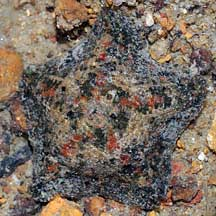
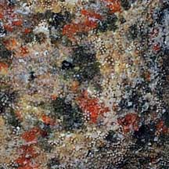
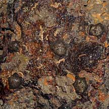
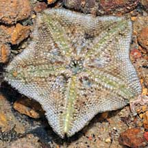
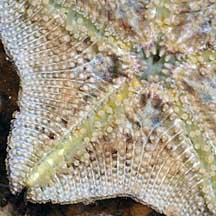
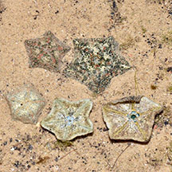
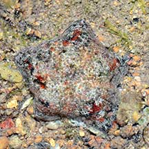

|
|
| sea stars text index | photo index |
| Phylum Echinodermata > Class Stelleroida > Subclass Asteroidea |
| Cryptic
sea star Cryptasterina sp. Family Asterinidae updated Mar 2020 Where seen? This little sea star hides under stones near the mid-water mark. At low tide it clamps tight to the surface almost like a limpet. It is found on natural rocky shores of our Southern shores. Features: Diameter with arms (3-4cm). 5 arms that are so short that the animal appears almost pentagonal. Clamping tight to the surface, the body is sometimes in a hump in the centre. Upperside with tiny holes through which short stubby transparent finger-like structures (papulae) emerge when it is submerged. Colours plain or mottled beige, brown or grey that camouflages it perfectly with the rocks it clings to. Underside pale without any markings. Tube feet short, tipped with suckers. According to Lane, the species are very difficult to tell apart even under the microscope and molecular methods are needed to distinguish the species. According to Marsh and Fromont, in Australia, Cryptasterina hystera is found in mangrove habitats under small intertidal rocks on mud and sandy mud. While Cryptasterina pentagona is found on or under rocks in the high intertidal. What does it eat? It grazes on algae, detritus, small animals and the biofilm found on the surface of the stone. Status and threats: This sea star is listed as 'Vulnerable' in the Red List of threatened animals of Singapore. |
 Pulau Semakau, May 08 |
 Stubby papulae stick out on the upper surface |
 Several found under a stone. Pulau Semakau, May 08 |
|
 Underside |
 |
| Cryptic sea stars on Singapore shores |
On wildsingapore
flickr
|
| Other sightings on Singapore shores |
 Berlayar Creek, Oct 17 Shared by Loh Kok Sheng on facebook. |
 Pulau Semakau (North), Jul 22 Shared by Loh Kok Sheng on facebook. |
References
|